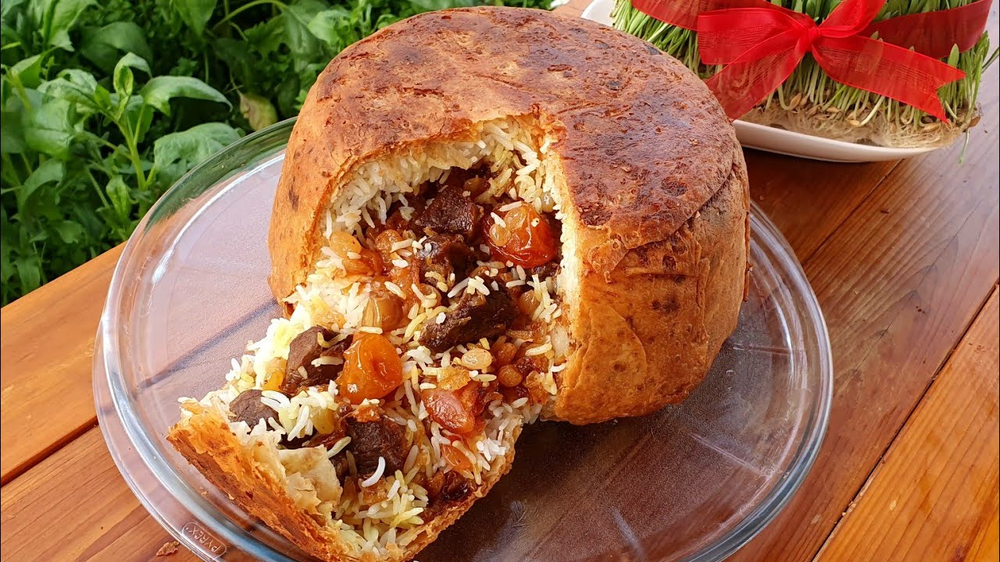

Home
Plov recipe

Description
Shah Plov is a traditional Azerbaijani rice dish, often considered a royal or festive meal. The name
"Shah" refers to the richness and opulence of the dish, as it's typically made with lamb or beef, and includes
elements like saffron, dried fruits, and nuts. It's a visually stunning and flavorful dish that’s often served
on special occasions, like weddings or major celebrations.
Ingredients
- 2 cups basmati rice (or long-grain rice)
- 500g lamb or beef (bone-in for more flavor, or boneless)
- 2 large onions, finely chopped
- 3 tablespoons vegetable oil (or butter)
- 4 cups water (for cooking rice)
- 1 teaspoon saffron threads
- 1 tablespoon hot water (for dissolving saffron)
- 1 teaspoon ground cumin
- 1 teaspoon ground turmeric (optional, for color)
- Salt to taste
- Black pepper to taste
- 1/2 cup raisins (or dried barberries)
- 1/4 cup dried apricots (chopped)
- 1/4 cup almonds or walnuts (sliced or whole)
- 2 tablespoons vegetable oil or butter (for frying)
- 2-3 tablespoons vegetable oil (or butter, for greasing)
- 2-3 tablespoons flour (optional, to make a dough seal for steaming)
Steps to prepare
- Begin by dissolving the saffron threads in 1 tablespoon of hot water. Set this aside to steep and release
its vibrant color and fragrance.
- Heat the vegetable oil or butter in a large pot over medium heat. Add the chopped onions and sauté them
until golden and soft.
- Add the meat (lamb or beef) to the pot. Brown the meat on all sides, and then add cumin, turmeric (if
using), black pepper, and salt to season the meat. Stir well.
- Add enough water to cover the meat (about 3-4 cups). Bring it to a boil, then reduce the heat and let it
simmer for about 1-1.5 hours until the meat is tender and cooked through. Once done, remove the meat from
the pot and set it aside. Keep the broth.
- Wash the rice thoroughly under cold water to remove excess starch, then soak it in water for 30 minutes.
- In a large pot, bring 4 cups of water to a boil, add salt, and cook the rice until it's about 75% done
(slightly firm but not fully cooked). Drain the rice and set it aside.
- In a separate pan, heat 2 tablespoons of vegetable oil or butter. Fry the raisins (or dried barberries)
until they puff up and become glossy. Remove them and set aside.
- In the same pan, fry the chopped apricots until they soften and turn slightly golden. Set aside with the
raisins.
- Finally, fry the almonds or walnuts in the oil until lightly toasted. Set them aside.
- In a large pot (or a plov pot, if you have one), drizzle 1-2 tablespoons of vegetable oil or butter to
grease the bottom.
- Layer the rice and meat alternately, starting with a layer of rice at the bottom. Place a layer of cooked
meat on top, followed by a layer of rice. Repeat the layers until all the rice and meat are used up.
- Drizzle the saffron-infused water over the top of the rice. If you want extra moisture, you can add a bit of
the reserved broth from the cooked meat.
- Cover the pot with a lid. If you prefer, you can create a dough seal with flour and water to help trap the
steam and keep the rice moist.
- Place the pot over low heat and let the plov steam for about 30-40 minutes. This will allow the rice to cook
fully, and the flavors to meld together. If you’ve sealed the pot with dough, you can remove the dough seal
after 30 minutes.
- Once the rice is cooked and the plov is ready, carefully fluff the rice to mix the layers.
- Top the plov with the fried raisins, apricots, and toasted nuts (almonds or walnuts).
- Serve hot, with a side of yogurt or a fresh salad to balance out the richness of the dish.